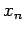

Inhalt Index DeskTop Bronstein

 Numerische Mathematik Numerische Lösung nichtlinearer Gleichungen Iterationsverfahren
Numerische Mathematik Numerische Lösung nichtlinearer Gleichungen Iterationsverfahren


d.h., es benötigt zur Berechnung des neuen Näherungswertes xn+1 die Werte der Funktion f(x) und ihrer 1. Ableitung f'(x) an der Stelle .
notwendig, die Bedingung
| (19.7b) |
hinreichend. Die Bedingungen (19.7a,b) müssen in einer Umgebung von  , die alle Punkte xn sowie
, die alle Punkte xn sowie  enthält, erfüllt sein. Falls das NEWTON-Verfahren konvergiert, dann konvergiert es so gut, daß sich bei jedem Iterationsschritt die Anzahl der genauen Stellen etwa verdoppelt. Man spricht in diesem Fall auch von quadratischer Konvergenz.
enthält, erfüllt sein. Falls das NEWTON-Verfahren konvergiert, dann konvergiert es so gut, daß sich bei jedem Iterationsschritt die Anzahl der genauen Stellen etwa verdoppelt. Man spricht in diesem Fall auch von quadratischer Konvergenz.
| Beispiel |
|
Zur Lösung der Gleichung , d.h. speziell zur Berechnung der Werte (a > 0 gegeben) liefert das NEWTON-Verfahren die Iterationsvorschrift |
| (19.8) |
Für a=2 erhält man:
Die Grundidee des NEWTON-Verfahrens besteht in der lokalen Approximation der Kurve y = f(x) durch eine Tangente.
| (19.9) |
Die Güte der Konvergenz wird durch diese Vereinfachung nicht wesentlich beeinflußt.